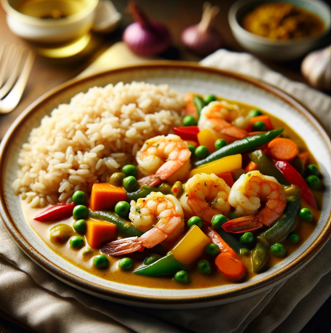

Shrimp and Vegetable Curry with Brown Rice
Ingredients
- 1 pound shrimp, peeled and deveined
- 2 cups mixed vegetables (bell peppers, carrots, snap peas, broccoli)
- 1 onion, diced
- 2 cloves garlic, minced
- 1 tablespoon ginger, minced
- 1 can (14 ounces) coconut milk
- 2 tablespoons curry powder
- 1 teaspoon turmeric powder
- 1 teaspoon cumin powder
- 1 teaspoon paprika
- 1 tablespoon cooking oil (vegetable or coconut oil)
- Salt and pepper to taste
- Cooked brown rice, for serving
| Nutrition Facts |
| Calories |
405.2 kcal |
| Total Fat |
10 g |
Meal Procedure
- Peel and devein the shrimp. Set aside.
- Wash and chop the mixed vegetables into bite-sized pieces.
- Heat cooking oil in a skillet or pot over medium heat. Sauté diced onion until translucent.
- Add minced garlic and ginger, cook for another 1-2 minutes until fragrant.
- Stir in curry powder, turmeric powder, cumin powder, and paprika. Cook for 1 minute.
- Pour in coconut milk, bring to a simmer, and cook for 5-7 minutes until slightly thickened.
- Add mixed vegetables, cook for 5-7 minutes until tender yet crisp.
- Add shrimp and cook for 3-4 minutes until pink and opaque.
- Season with salt and pepper to taste. Serve hot with brown rice.
Tips:
- Customize the vegetables based on preferences.
- Adjust spiciness by varying curry powder and paprika.
- Garnish with cilantro or green onions for freshness.
- Cook shrimp just until pink and opaque to avoid overcooking.
- Prepare brown rice according to package instructions.